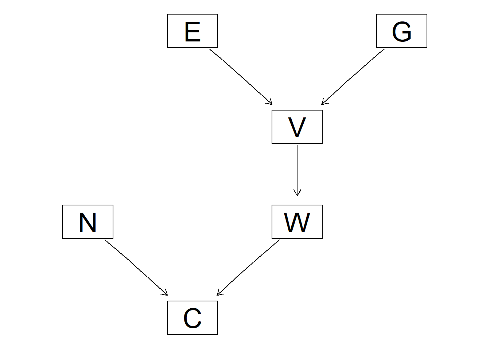
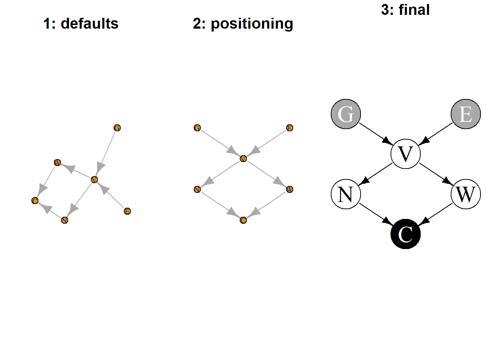
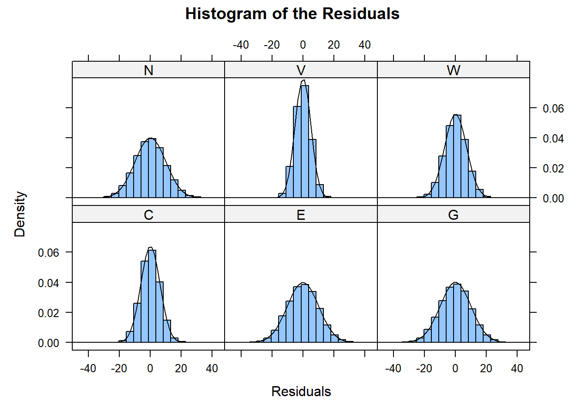

3 連続型データ事例：ガウシアン・ベイジアンネットワーク
3.1 事例紹介
いずれも連続型変数である
| 項目名 | 略語 | 説明 |
|---|---|---|
| 遺伝的ポテンシャル | G | |
| 環境的ポテンシャル | E | |
| 栄養器官 | V | ある単一の植物に蓄えられる栄養に関する情報すべてを統合した変数 |
| 種子の数 | N | 開花時期には判明する |
| 種子の平均重量 | W | 植物の寿命の後期にならないとわからない |
| 作物の収穫量 | C |
3.2 グラフィカル表現
##
## Random/Generated Bayesian network
##
## model:
## [E][G][V|E:G][N|V][W|V][C|N:W]
## nodes: 6
## arcs: 6
## undirected arcs: 0
## directed arcs: 6
## average markov blanket size: 2.67
## average neighbourhood size: 2.00
## average branching factor: 1.00
##
## generation algorithm: Empty
#どの変数の組み合わせが周辺的に独立しているか確認する
crop.nodes <- nodes(dag.bnlearn)
for(n1 in crop.nodes){
for(n2 in crop.nodes){
if(dsep(dag.bnlearn, n1, n2))
cat(n1, "and", n2, "are independent.\n")
}
}## E and G are independent.
## G and E are independent.EとGのみが独立している、独立性は対称的だった
#変数をすべての組あわせで対にして、栄養器官(V)で条件づけられた場合にどのペアが条件付き独立となるか確認できる
for(n1 in crop.nodes[crop.nodes != "V"]){
for(n2 in crop.nodes[crop.nodes != "V"]){
if(n1<n2){
if(dsep(dag.bnlearn, n1, n2, "V"))
cat(n1, "and", n2, "are independent given V.\n")
}
}
}## C and E are independent given V.
## C and G are independent given V.
## E and N are independent given V.
## E and W are independent given V.
## G and N are independent given V.
## G and W are independent given V.
## N and W are independent given V.Vで条件づけられるとEとGは独立ではない
3.3 確率的表現
#各パラメータの確率分布を定義する
E.dist <- list(coef = c("(Intercept)" = 50), sd = 10)
G.dist <- list(coef = c("(Intercept)" = 50), sd = 10)
V.dist <- list(coef = c("(Intercept)" = -10.35534, E = 0.70711, G = 0.5), sd = 5)
N.dist <- list(coef = c("(Intercept)" = 45, V = 0.1), sd = 9.949874)
W.dist <- list(coef = c("(Intercept)" = 15, V = 0.7), sd = 7.141428)
C.dist <- list(coef = c("(Intercept)" = 0, N = 0.3, W = 0.7), sd = 6.25)
dist.list <- list(E = E.dist, G = G.dist, V = V.dist, N = N.dist, W = W.dist, C = C.dist)##
## Parameters of node C (Gaussian distribution)
##
## Conditional density: C | N + W
## Coefficients:
## (Intercept) N W
## 0.0 0.3 0.7
## Standard deviation of the residuals: 6.25上記は線形ガウシアン・ベイジアンネットワークである
すべてのノードは正規分布に基づく
親のノードをもたないノードは周辺分布により記述
各ノードの分散はそのノードに特有で親ノードに依存しない
各ノードの局所的分布は切片と親ノードを含んだ線形ガウシアンモデルとして表現
## mu s.d. C.E C.G C.V C.W C.N C.C
## E 50 10 1.000 0.00 0.707 0.495 0.071 0.368
## G 50 10 0.000 1.00 0.500 0.350 0.050 0.260
## V 50 10 0.707 0.50 1.000 0.700 0.100 0.520
## W 50 10 0.495 0.35 0.700 1.000 0.070 0.721
## N 50 10 0.071 0.05 0.100 0.070 1.000 0.349
## C 50 10 0.368 0.26 0.520 0.721 0.349 1.0001列目：周辺分布の期待値
2列目：周辺分布の標準偏差
3列目以降：相関行列
3.4 パラメータの推定：相関係数
DAG構造は既知とする
#200の観測サンプルを生成して、cropdata200に格納する
set.seed(4567)
cropdata200 <- rbn(gbn.bnlearn, n = 200)
set.seed(1234)
cropdata20k <- rbn(gbn.bnlearn, n = 20000)
dim(cropdata200)## [1] 200 6## C E G N V W
## 1 48.83 51.48 42.64 54.10 42.96 41.96
## 2 48.85 73.43 40.97 60.07 65.29 48.96
## 3 67.01 71.10 52.52 51.64 63.22 62.03
## 4 37.83 49.33 56.15 49.01 47.75 38.77
## 5 55.30 49.27 63.55 54.62 60.57 56.66
## 6 56.12 48.72 66.02 43.95 55.54 52.39#パラメータを推定する
#変数が因子型でなければ自動的にガウシアン・ベイジアンネットワークと判断される
crop.fitted <- bn.fit(dag.bnlearn, data = cropdata200)
crop.fitted##
## Bayesian network parameters
##
## Parameters of node C (Gaussian distribution)
##
## Conditional density: C | N + W
## Coefficients:
## (Intercept) N W
## 2.4026177 0.2734476 0.6858202
## Standard deviation of the residuals: 6.31327
##
## Parameters of node E (Gaussian distribution)
##
## Conditional density: E
## Coefficients:
## (Intercept)
## 50.80161
## Standard deviation of the residuals: 10.7432
##
## Parameters of node G (Gaussian distribution)
##
## Conditional density: G
## Coefficients:
## (Intercept)
## 50.14396
## Standard deviation of the residuals: 9.798923
##
## Parameters of node N (Gaussian distribution)
##
## Conditional density: N | V
## Coefficients:
## (Intercept) V
## 51.81745022 -0.04461524
## Standard deviation of the residuals: 9.531253
##
## Parameters of node V (Gaussian distribution)
##
## Conditional density: V | E + G
## Coefficients:
## (Intercept) E G
## -10.4547647 0.7426946 0.4552872
## Standard deviation of the residuals: 5.034309
##
## Parameters of node W (Gaussian distribution)
##
## Conditional density: W | V
## Coefficients:
## (Intercept) V
## 20.1555287 0.5899971
## Standard deviation of the residuals: 6.792171##
## Parameters of node C (Gaussian distribution)
##
## Conditional density: C | N + W
## Coefficients:
## (Intercept) N W
## 2.4026177 0.2734476 0.6858202
## Standard deviation of the residuals: 6.31327一般的な回帰モデルをもちいてパラメータ推定を行う
リッジ、ラッソ回帰などについては以下を参照
https://aizine.ai/ridge-lasso-elasticnet/
#収穫量Cについてリッジ回帰を当てはめてみる
library(penalized)
crop.fitted$C <- penalized(C ~ N + W, lambda1 = 0,
lambda2 = 1.5, data = cropdata200)## 12推定した値を真値（avg:50, sd:10)と比較する
##
## Parameters of node E (Gaussian distribution)
##
## Conditional density: E
## Coefficients:
## (Intercept)
## 50.80161
## Standard deviation of the residuals: 10.7432##
## Parameters of node C (Gaussian distribution)
##
## Conditional density: C | N + W
## Coefficients:
## (Intercept) N W
## 2.4069159 0.2734233 0.6857580
## Standard deviation of the residuals: 6.31327NやW、SDについては真値に近似しているが、切片が0とは遠いので以下で直接修正する
##
## Parameters of node C (Gaussian distribution)
##
## Conditional density: C | N + W
## Coefficients:
## (Intercept) N W
## 0.0000000 0.2963220 0.7105197
## Standard deviation of the residuals: 6.3049693.5 DAG構造の学習：検定とスコア
3.5.1 条件付き独立性検定
## C W N
## C 1.0000000 0.67479818 0.26480613
## W 0.6747982 1.00000000 -0.02597999
## N 0.2648061 -0.02597999 1.00000000#cormat（相関行列）からinvcor(偏相関行列)を計算する
#ほかのすべての変数で条件づけられた場合のXとYにおける偏相関という意味
library(corpcor)
invcor <- cor2pcor(cormat)
dimnames(invcor) <- dimnames(cormat)
invcor## C W N
## C 1.0000000 0.7071522 0.3826989
## W 0.7071522 1.0000000 -0.2875974
## N 0.3826989 -0.2875974 1.0000000#種子の数Nで条件づけられた場合に作物の収穫量Cと種子の平均重量Wは独立か、という仮説を検証できる
ci.test("C", "W", "N", test = "cor", data = cropdata200)##
## Pearson's Correlation
##
## data: C ~ W | N
## cor = 0.70715, df = 197, p-value < 2.2e-16
## alternative hypothesis: true value is not equal to 0有意な偏相関があったことから帰無仮説を棄却し、独立でないと言える
#200個のデータセットは大規模ではないので構造自体を学習させると以下のようになる
pdag1 <- iamb(cropdata200, test = "cor")
graphviz.plot(pdag1)
#一部アークの追加、削除ができる
wl <- matrix(c("V", "N"), ncol = 2)
pdag3 <- iamb(cropdata200, test = "cor", whitelist = wl)
graphviz.plot(pdag3)
3.6 ガウシアン・ベイジアンネットワークを使ってみよう
3.6.1 厳密推論
## =====Nodes===[parents] = Exp. (sd.dev)
## -----------------------------------------------
## ---------E---[-] = 50 (10)
## ---------G---[-] = 50 (10)
## ---------V---[E,G] = -10.355 + 0.707*E + 0.5*G (5)
## ---------W---[V] = 15 + 0.7*V (7.141)
## ---------N---[V] = 45 + 0.1*V (9.95)
## ---------C---[N,W] = 0.3*N + 0.7*W (6.25)## mu E1 E2 E3 E4 E5 E6
## E 50 10.000 0.0 0.0 0.000 0.000 0.00
## G 50 0.000 10.0 0.0 0.000 0.000 0.00
## V 50 7.071 5.0 5.0 0.000 0.000 0.00
## W 50 4.950 3.5 3.5 7.141 0.000 0.00
## N 50 0.707 0.5 0.5 0.000 9.950 0.00
## C 50 3.677 2.6 2.6 4.999 2.985 6.25別のノードの値を固定した場合の1つor複数のノードの条件付同時分布を算出可能
## mu s.d.
## C 65.6 8.5423.6.2 近似推論
シミュレーションを用いる
直接的：rnb関数
制約的：cpquery/cpdist関数
## C E G N V W
## 1 65.41210 79.12004 67.14710 63.82861 79.28153 59.53187
## 2 46.01587 35.57628 59.05068 51.74454 37.51262 40.01539
## 3 63.36558 62.26097 48.24989 53.12280 57.59524 64.20510
## 4 40.36104 35.87449 59.02320 37.77818 50.75239 47.35855#条件を付けて生成する
#非常に良質な作物を生産するための種子の数や平均重量はどのようなものか
head(cpdist(gbn.bnlearn, nodes = c("C", "N", "W"), evidence = (C > 80)))## C N W
## 1 82.73325 66.14010 73.51469
## 2 81.32917 66.46854 80.87893
## 3 83.71564 64.03459 75.02483
## 4 81.56583 55.56495 63.87066
## 5 81.67702 65.23859 65.27324
## 6 80.12171 59.03308 72.62500“=”を使って単一値を条件づける場合はこのアプローチは不可能となる
- 連続型分布において単一値はつねに確率がゼロであるから
ただし以下のように尤度重み付け法を用いることで解決することができる
head(cpdist(gbn.bnlearn, nodes = c("V","G","E"),
evidence = list(G = 10, E = 90), method = "lw"), n = 5)## V G E
## 1 63.71504 10 90
## 2 62.78473 10 90
## 3 67.95987 10 90
## 4 53.36817 10 90
## 5 58.42986 10 90#また特定のイベントに関する確率を算出できる
cpquery(gbn.bnlearn, event = (V > 70),
evidence = list(G = 10, E = 90), method = "lw")## [1] 0.0096666673.7 ガウシアン・ベイジアンネットワークの図示
3.7.1 DAGの図示
#別の方法を用いて作図してみる
library(igraph)
igraph.options(print.full = TRUE)
dag0.igraph <- graph.formula(G-+V, E-+V, V-+N, V-+W, N-+C, W-+C)
dag0.igraph## IGRAPH 5a01d1b DN-- 6 6 --
## + attr: name (v/c)
## + edges from 5a01d1b (vertex names):
## [1] G->V V->N V->W E->V N->C W->C## + 6/6 vertices, named, from 7471164:
## [1] C E G N V W## + 6/6 edges from 7471164 (vertex names):
## [1] G->V E->V V->N V->W N->C W->Cpar(mfrow = c(1, 3), mar = rep(3, 4), cex.main = 2)
plot(dag.igraph, main = "\n1: defaults")
ly <- matrix(c(2, 3, 1, 1, 2, 3, 1, 4, 4, 2, 3, 2), 6)
plot(dag.igraph, layout = ly, main = "\n2: positioning")
vcol <- c("black", "darkgrey", "darkgrey", rep(NA, 3))
lcol <- c(rep("white", 3), rep(NA, 3))
par(mar = rep(0, 4), lwd = 1.5)
plot(dag.igraph, layout = ly, frame = TRUE, main = "\n3: final",
vertex.color = vcol, vertex.label.color = lcol,
vertex.label.cex = 3, vertex.size = 50,
edge.arrow.size = 0.8, edge.color = "black")
3.7.2 条件付き確率分布の図示
ガウシアン・ベイジアンネットワークの局所的分布を図示するための関数はない
線形回帰モデルのための回帰診断図を利用することは可能
ただし、残差と当てはめ値がbn.fitオブジェクトに格納されている必要がある
gbn.fit <- bn.fit(dag.bnlearn, data = cropdata20k)
#残差に関するquantile-quantileプロット
bn.fit.qqplot(gbn.fit)

環境的ポテンシャルEと栄養期間Vの組み合わせに対してどのように収穫量Cが変化するのかについて興味があるとする（C|E,V)
## E V
## C 9.665421e-17 0.52Vに関する情報が得られたときはEに関する回帰係数が0になる→Cを推定するに当たりEに関する情報は役に立たない
## [1] TRUEEとVの両方を変化させた場合のCに関する分布を算出したい
3次元プロットは難しくエラーが発生しやすいので、二次元で観測値のポイントの大きさを変えることで表現する
set.seed(5678)
cropdata3 <- cpdist(gbn.bnlearn, nodes = c("E", "V", "C"),
evidence = TRUE, n = 1000)
plot(cropdata3$V, cropdata3$C, type = "n", main = "C|V,E; E is the point size")
cexlim <- c(0.1, 2.4)
cexE <- cexlim[1] + diff(cexlim) / diff(range(cropdata3$E) *
(cropdata3$E - min(cropdata3$E)))
points(cropdata3$V, cropdata3$C, cex = cexE*10)
cqa <- quantile(cropdata3$C, seq(0, 1, 0.1))
abline(h = cqa, lty = 3)